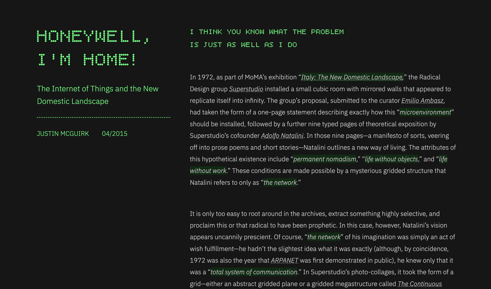
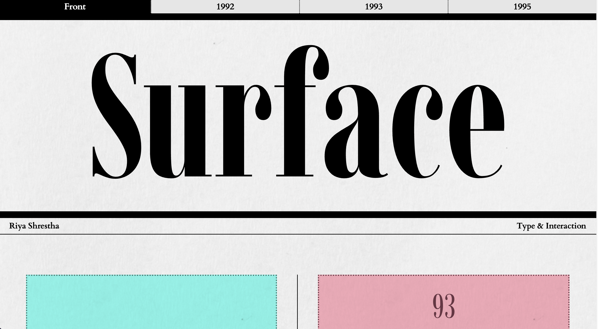

This is a collection of coding exercises that I have done during my time at Parsons School of Design for our Typography & Interaction class.
#spread

This webpage is a depiction of the essay "Neomania" by Anne Burdick. Which is a call out to designers that are addicted to the new and the cool, but they pretend they're doing something more serious and functional.
#binding

This webpage is a depiction of the essay "Neomania" by Anne Burdick. Which is a call out to designers that are addicted to the new and the cool, but they pretend they're doing something more serious and functional.
#links
This webpage is a depiction of the essay "Neomania" by Anne Burdick. Which is a call out to designers that are addicted to the new and the cool, but they pretend they're doing something more serious and functional.
#function
This webpage is a depiction of the essay "Neomania" by Anne Burdick. Which is a call out to designers that are addicted to the new and the cool, but they pretend they're doing something more serious and functional.